Modeling¶
The module cvxopt.modeling can be used to specify and solve
optimization problems with convex piecewise-linear objective and
constraint functions. Using this modeling tool, one can specify an
optimization problem by first defining the optimization variables (see the
section Variables), and then specifying the objective and
constraint functions using linear operations (vector addition and
subtraction, matrix-vector multiplication, indexing and slicing)
and nested evaluations of max,
min,
abs and
sum (see the section Functions).
A more general Python convex modeling package is CVXPY.
Variables¶
Optimization variables are represented by variable objects.
-
cvxopt.modeling.variable([size[, name]])¶ A vector variable. The first argument is the dimension of the vector (a positive integer with default value 1). The second argument is a string with a name for the variable. The name is optional and has default value
"". It is only used when displaying variables (or objects that depend on variables, such as functions or constraints) usingprintstatements, when calling the built-in functionsreprorstr, or when writing linear programs to MPS files.
The function len returns the length of a variable.
A variable x has two attributes.
-
name¶ The name of the variable.
-
value¶ Either
Noneor a dense'd'matrix of sizelen(x)by 1.The attribute
x.valueis set toNonewhen the variablexis created. It can be given a numerical value later, typically by solving an LP that hasxas one of its variables. One can also make an explicit assignmentx.value = y. The assigned valueymust be an integer or float, or a dense'd'matrix of size(len(x), 1). Ifyis an integer or float, all the elements ofx.valueare set to the value ofy.
>>> from cvxopt import matrix
>>> from cvxopt.modeling import variable
>>> x = variable(3,'a')
>>> len(x)
3
>>> print(x.name)
a
>>> print(x.value)
None
>>> x.value = matrix([1.,2.,3.])
>>> print(x.value)
[ 1.00e+00]
[ 2.00e+00]
[ 3.00e+00]
>>> x.value = 1
>>> print(x.value)
[ 1.00e+00]
[ 1.00e+00]
[ 1.00e+00]
Functions¶
Objective and constraint functions can be defined via overloaded operations
on variables and other functions. A function f is interpreted as a
column vector, with length len(f) and with a value that depends on
the values of its variables. Functions have two public attributes.
-
variables Returns a copy of the list of variables of the function.
-
value The function value. If any of the variables of
fhas valueNone, thenf.value()returnsNone. Otherwise, it returns a dense'd'matrix of size(len(f),1)with the function value computed from thevalueattributes of the variables off.
Three types of functions are supported: affine, convex piecewise-linear, and concave piecewise-linear.
Affine functions represent vector valued functions of the form
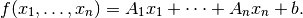
The coefficients can be scalars or dense or sparse matrices. The constant term is a scalar or a column vector.
Affine functions result from the following operations.
- Unary operations
- For a variable
x, the unary operation+xresults in an affine function withxas variable, coefficient 1.0, and constant term 0.0. The unary operation-xreturns an affine function withxas variable, coefficient -1.0, and constant term 0.0. For an affine functionf,+fis a copy off, and-fis a copy offwith the signs of its coefficients and constant term reversed. - Addition and subtraction
Sums and differences of affine functions, variables and constants result in new affine functions. The constant terms in the sum can be of type integer or float, or dense or sparse
'd'matrices with one column.The rules for addition and subtraction follow the conventions for matrix addition and subtraction in the section Arithmetic Operations, with variables and affine functions interpreted as dense
'd'matrices with one column. In particular, a scalar term (integer, float, 1 by 1 dense'd'matrix, variable of length 1, or affine function of length 1) can be added to an affine function or variable of length greater than 1.- Multiplication
- Suppose
vis an affine function or a variable, andais an integer, float, sparse or dense'd'matrix. The productsa * vandv * aare valid affine functions whenever the product is allowed under the rules for matrix and scalar multiplication of the section Arithmetic Operations, withvinterpreted as a'd'matrix with one column. In particular, the producta * vis defined ifais a scalar (integer, float, or 1 by 1 dense'd'matrix), or a matrix (dense or sparse) witha.size[1]equal tolen(v). The operationv * ais defined ifais scalar, or iflen(v)is 1 andais a matrix with one column. - Inner products
The following two functions return scalar affine functions defined as inner products of a constant vector with a variable or affine function.
-
cvxopt.modeling.sum(v)¶ The argument is an affine function or a variable. The result is an affine function of length 1, with the sum of the components of the argument
v.
-
cvxopt.modeling.dot(u, v)¶ If
vis a variable or affine function anduis a'd'matrix of size(len(v), 1), thendot(u, v)anddot(v, u)are equivalent tou.trans() * v.If
uandvare dense matrices, thendotis equivalent to the functionblas.dot, i.e., it returns the inner product of the two matrices.
-
In the following example, the variable x has length 1 and y has
length 2. The functions f and g are given by
![f(x,y) &= \left[ \begin{array}{c} 2 \\ 2 \end{array}\right] x
+ y + \left[ \begin{array}{c} 3 \\ 3 \end{array}\right], \\
g(x,y) &=
\left[ \begin{array}{cc} 1 & 3 \\ 2 & 4 \end{array}\right] f(x,y) +
\left[ \begin{array}{cc} 1 & 1 \\ 1 & 1 \end{array} \right] y +
\left[ \begin{array}{c} 1 \\ -1 \end{array} \right] \\
&= \left[ \begin{array}{c} 8 \\ 12 \end{array}\right] x +
\left[ \begin{array}{cc} 2 & 4 \\ 3 & 5 \end{array}\right] y +
\left[ \begin{array}{c} 13 \\ 17\end{array}\right].](_images/math/198ab32e382c82002570f58df80b131d525f6bfd.png)
>>> from cvxopt.modeling import variable
>>> x = variable(1,'x')
>>> y = variable(2,'y')
>>> f = 2*x + y + 3
>>> A = matrix([[1., 2.], [3.,4.]])
>>> b = matrix([1.,-1.])
>>> g = A*f + sum(y) + b
>>> print(g)
affine function of length 2
constant term:
[ 1.30e+01]
[ 1.70e+01]
linear term: linear function of length 2
coefficient of variable(2,'y'):
[ 2.00e+00 4.00e+00]
[ 3.00e+00 5.00e+00]
coefficient of variable(1,'x'):
[ 8.00e+00]
[ 1.20e+01]
- In-place operations
- For an affine function
fthe operationsf += uandf -= u, withua constant, a variable or an affine function, are allowed if they do not change the length off, i.e., ifuhas lengthlen(f)or length 1. In-place multiplicationf *= uand divisionf /= uare allowed ifuis an integer, float, or 1 by 1 matrix. - Indexing and slicing
- Variables and affine functions admit single-argument indexing of the four types described in the section Indexing and Slicing. The result of an indexing or slicing operation is an affine function.
>>> x = variable(4,'x')
>>> f = x[::2]
>>> print(f)
linear function of length 2
linear term: linear function of length 2
coefficient of variable(4,'x'):
[ 1.00e+00 0 0 0 ]
[ 0 0 1.00e+00 0 ]
>>> y = variable(3,'x')
>>> g = matrix(range(12),(3,4),'d')*x - 3*y + 1
>>> print(g[0] + g[2])
affine function of length 1
constant term:
[ 2.00e+00]
linear term: linear function of length 1
coefficient of variable(4,'x'):
[ 2.00e+00 8.00e+00 1.40e+01 2.00e+01]
coefficient of variable(3,'x'):
[-3.00e+00 0 -3.00e+00]
The general expression of a convex piecewise-linear function is
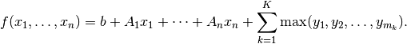
The maximum in this expression is a componentwise maximum of its vector arguments, which can be constant vectors, variables, affine functions or convex piecewise-linear functions. The general expression for a concave piecewise-linear function is
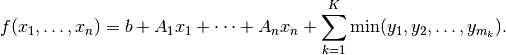
Here the arguments of the min
can be constants, variables, affine
functions or concave piecewise-linear functions.
Piecewise-linear functions can be created using the following operations.
- Maximum
If the arguments in
f = max(y1, y2, ...)do not include any variables or functions, then the Python built-inmaxis evaluated.If one or more of the arguments are variables or functions,
maxreturns a piecewise-linear function defined as the elementwise maximum of its arguments. In other words,f[k] = max(y1[k], y2[k], ...)fork= 0, ...,len(f) - 1. The length offis equal to the maximum of the lengths of the arguments. Each argument must have length equal tolen(f)or length one. Arguments with length one are interpreted as vectors of lengthlen(f)with identical entries.The arguments can be scalars of type integer or float, dense
'd'matrices with one column, variables, affine functions or convex piecewise-linear functions.With one argument,
f = max(u)is interpreted asf = max(u[0], u[1], ..., u[len(u)-1]).- Minimum
- Similar to
maxbut returns a concave piecewise-linear function. The arguments can be scalars of type integer or float, dense'd'matrices with one column, variables, affine functions or concave piecewise-linear functions. - Absolute value
- If
uis a variable or affine function thenf = abs(u)returns the convex piecewise-linear functionmax(u, -u). - Unary plus and minus
+fcreates a copy off.-fis a concave piecewise-linear function iffis convex and a convex piecewise-linear function iffis concave.- Addition and subtraction
- Sums and differences involving piecewise-linear functions are allowed
if they result in convex or concave functions. For example, one can add
two convex or two concave functions, but not a convex and a concave
function. The command
sum(f)is equivalent tof[0] + f[1] + ... + f[len(f) - 1]. - Multiplication
- Scalar multiplication
a * fof a piecewise-linear functionfis defined ifais an integer, float, 1 by 1'd'matrix. Matrix-matrix multiplicationsa * forf * aare only defined ifais a dense or sparse 1 by 1 matrix. - Indexing and slicing
- Piecewise-linear functions admit single-argument indexing of the four types described in the section Indexing and Slicing. The result of an indexing or slicing operation is a new piecewise-linear function.
In the following example, f is the 1-norm of a vector variable x of
length 10, g is its infinity-norm, and h is the function
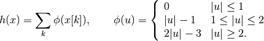
>>> from cvxopt.modeling import variable, max
>>> x = variable(10, 'x')
>>> f = sum(abs(x))
>>> g = max(abs(x))
>>> h = sum(max(0, abs(x)-1, 2*abs(x)-3))
- In-place operations
- If
fis piecewise-linear then the in-place operationsf += u,f -= u,f *= u,f /= uare defined if the corresponding expanded operationsf = f + u,f = f - u,f = f * u, andf = f/uare defined and if they do not change the length off.
Constraints¶
Linear equality and inequality constraints of the form

where  is a convex function, are represented by
is a convex function, are represented by constraint
objects. Equality constraints are created by expressions of the form
f1 == f2
Here f1 and f2 can be any objects for which the difference
f1 - f2 yields an affine function. Inequality constraints are
created by expressions of the form
f1 <= f2
f2 >= f1
where f1 and f2 can be any objects for which the difference
f1 - f2 yields a convex piecewise-linear function. The comparison
operators first convert the expressions to f1 - f2 == 0, resp.,
f1 - f2 <= 0, and then return a new constraint object with
constraint function f1 - f2.
In the following example we create three constraints
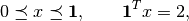
for a variable of length 5.
>>> x = variable(5,'x')
>>> c1 = (x <= 1)
>>> c2 = (x >= 0)
>>> c3 = (sum(x) == 2)
The built-in function len returns the dimension of the
constraint function.
Constraints have four public attributes.
-
type¶ Returns
'='if the constraint is an equality constraint, and ‘<’ if the constraint is an inequality constraint.
-
value Returns the value of the constraint function.
-
multiplier¶ For a constraint
c,c.multiplieris avariableobject of dimensionlen(c). It is used to represent the Lagrange multiplier or dual variable associated with the constraint. Its value is initialized asNone, and can be modified by making an assignment toc.multiplier.value.
-
name The name of the constraint. Changing the name of a constraint also changes the name of the multiplier of
c. For example, the commandc.name = 'newname'also changesc.multiplier.nameto'newname_mul'.
Optimization Problems¶
Optimization problems are be constructed by calling the following function.
-
cvxopt.modeling.op([objective[, constraints[, name]]])¶ The first argument specifies the objective function to be minimized. It can be an affine or convex piecewise-linear function with length 1, a
variablewith length 1, or a scalar constant (integer, float, or 1 by 1 dense'd'matrix). The default value is 0.0.The second argument is a single
constraint, or a list ofconstraintobjects. The default value is an empty list.The third argument is a string with a name for the problem. The default value is the empty string.
The following attributes and methods are useful for examining and modifying optimization problems.
-
objective¶ The objective or cost function. One can write to this attribute to change the objective of an existing problem.
-
variables() Returns a list of the variables of the problem.
-
constraints() Returns a list of the constraints.
-
inequalities()¶ Returns a list of the inequality constraints.
-
equalities()¶ Returns a list of the equality constraints.
-
delconstraint(c)¶ Deletes constraint
cfrom the problem.
An optimization problem with convex piecewise-linear objective and
constraints can be solved by calling the method solve.
-
solve([format[, solver]])¶ This function converts the optimization problem to a linear program in matrix form and then solves it using the solver described in the section Linear Programming.
The first argument is either
'dense'or'sparse', and denotes the matrix types used in the matrix representation of the LP. The default value is'dense'.The second argument is either
None,'glpk', or'mosek', and selects one of three available LP solvers: the default solver written in Python, the GLPK solver (if installed) or the MOSEK LP solver (if installed); see the section Linear Programming. The default value isNone.The solver reports the outcome of optimization by setting the attribute
self.statusand by modifying thevalueattributes of the variables and the constraint multipliers of the problem.- If the problem is solved to optimality,
self.statusis set to'optimal'. Thevalueattributes of the variables in the problem are set to their computed solutions, and thevalueattributes of the multipliers of the constraints of the problem are set to the computed dual optimal solution. - If it is determined that the problem is infeasible,
self.statusis set to'primal infeasible'. Thevalueattributes of the variables are set toNone. Thevalueattributes of the multipliers of the constraints of the problem are set to a certificate of primal infeasibility. With the'glpk'option,solvedoes not provide certificates of infeasibility. - If it is determined that the problem is dual infeasible,
self.statusis set to'dual infeasible'. Thevalueattributes of the multipliers of the constraints of the problem are set toNone. Thevalueattributes of the variables are set to a certificate of dual infeasibility. With the'glpk'option,solvedoes not provide certificates of infeasibility. - If the problem was not solved successfully,
self.statusis set to'unknown'. Thevalueattributes of the variables and the constraint multipliers are set toNone.
- If the problem is solved to optimality,
We refer to the section Linear Programming for details on the algorithms and the different solver options.
As an example we solve the LP
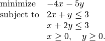
>>> from cvxopt.modeling import op
>>> x = variable()
>>> y = variable()
>>> c1 = ( 2*x+y <= 3 )
>>> c2 = ( x+2*y <= 3 )
>>> c3 = ( x >= 0 )
>>> c4 = ( y >= 0 )
>>> lp1 = op(-4*x-5*y, [c1,c2,c3,c4])
>>> lp1.solve()
>>> lp1.status
'optimal'
>>> print(lp1.objective.value())
[-9.00e+00]
>>> print(x.value)
[ 1.00e+00]
>>> print(y.value)
[ 1.00e+00]
>>> print(c1.multiplier.value)
[ 1.00e+00]
>>> print(c2.multiplier.value)
[ 2.00e+00]
>>> print(c3.multiplier.value)
[ 2.87e-08]
>>> print(c4.multiplier.value)
[ 2.80e-08]
We can solve the same LP in matrix form as follows.
>>> from cvxopt.modeling import op, dot
>>> x = variable(2)
>>> A = matrix([[2.,1.,-1.,0.], [1.,2.,0.,-1.]])
>>> b = matrix([3.,3.,0.,0.])
>>> c = matrix([-4.,-5.])
>>> ineq = ( A*x <= b )
>>> lp2 = op(dot(c,x), ineq)
>>> lp2.solve()
>>> print(lp2.objective.value())
[-9.00e+00]
>>> print(x.value)
[ 1.00e+00]
[ 1.00e+00]
>>> print(ineq.multiplier.value)
[1.00e+00]
[2.00e+00]
[2.87e-08]
[2.80e-08]
The op class also includes two methods for writing and reading
files in
MPS format.
-
tofile(filename) :noindex: If the problem is an LP, writes it to the file filename using the MPS format. Row and column labels are assigned based on the variable and constraint names in the LP.
-
fromfile(filename) :noindex: Reads the LP from the file filename. The file must be a fixed-format MPS file. Some features of the MPS format are not supported: comments beginning with dollar signs, the row types ‘DE’, ‘DL’, ‘DG’, and ‘DN’, and the capability of reading multiple righthand side, bound or range vectors.
Examples¶
Norm and Penalty Approximation
In the first example we solve the norm approximation problems
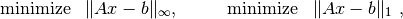
and the penalty approximation problem
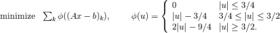
We use randomly generated data.
The code uses the Matplotlib package for plotting the histograms of the residual vectors for the two solutions. It generates the figure shown below.
from cvxopt import normal from cvxopt.modeling import variable, op, max, sum import pylab m, n = 500, 100 A = normal(m,n) b = normal(m) x1 = variable(n) op(max(abs(A*x1-b))).solve() x2 = variable(n) op(sum(abs(A*x2-b))).solve() x3 = variable(n) op(sum(max(0, abs(A*x3-b)-0.75, 2*abs(A*x3-b)-2.25))).solve() pylab.subplot(311) pylab.hist(A*x1.value-b, m/5) pylab.subplot(312) pylab.hist(A*x2.value-b, m/5) pylab.subplot(313) pylab.hist(A*x3.value-b, m/5) pylab.show()
Equivalently, we can formulate and solve the problems as LPs.
t = variable() x1 = variable(n) op(t, [-t <= A*x1-b, A*x1-b<=t]).solve() u = variable(m) x2 = variable(n) op(sum(u), [-u <= A*x2+b, A*x2+b <= u]).solve() v = variable(m) x3 = variable(n) op(sum(v), [v >= 0, v >= A*x3+b-0.75, v >= -(A*x3+b)-0.75, v >= 2*(A*x3-b)-2.25, v >= -2*(A*x3-b)-2.25]).solve()
Robust Linear Programming
The robust LP
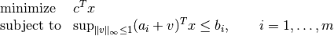
is equivalent to the problem
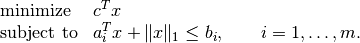
The following code computes the solution and the solution of the equivalent LP
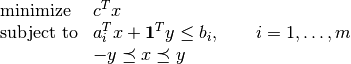
for randomly generated data.
from cvxopt import normal, uniform from cvxopt.modeling import variable, dot, op, sum m, n = 500, 100 A = normal(m,n) b = uniform(m) c = normal(n) x = variable(n) op(dot(c,x), A*x+sum(abs(x)) <= b).solve() x2 = variable(n) y = variable(n) op(dot(c,x2), [A*x2+sum(y) <= b, -y <= x2, x2 <= y]).solve()
1-Norm Support Vector Classifier
The following problem arises in classification:
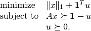
It can be solved as follows.
x = variable(A.size[1],'x') u = variable(A.size[0],'u') op(sum(abs(x)) + sum(u), [A*x >= 1-u, u >= 0]).solve()An equivalent unconstrained formulation is
x = variable(A.size[1],'x') op(sum(abs(x)) + sum(max(0,1-A*x))).solve()